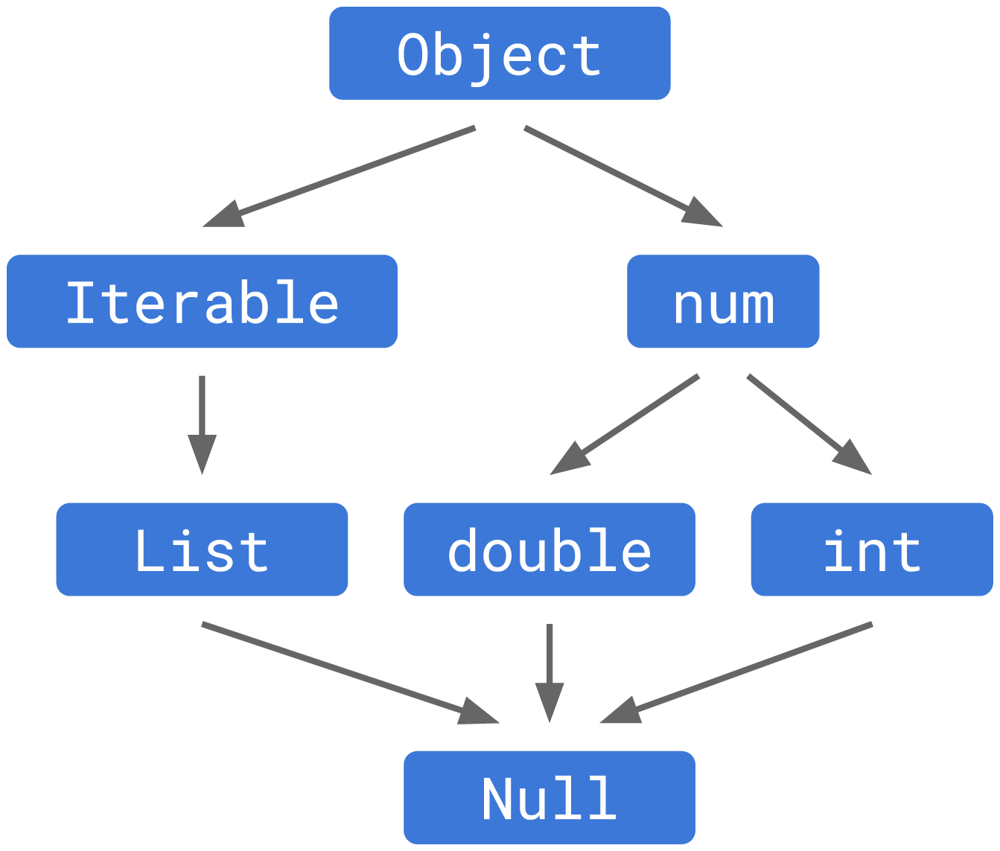
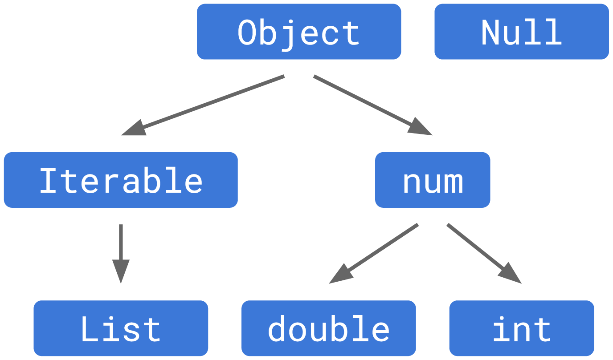
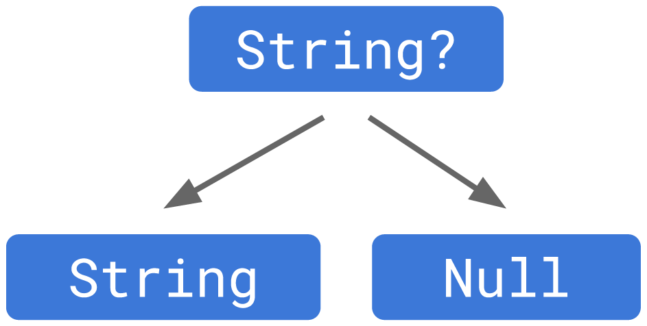
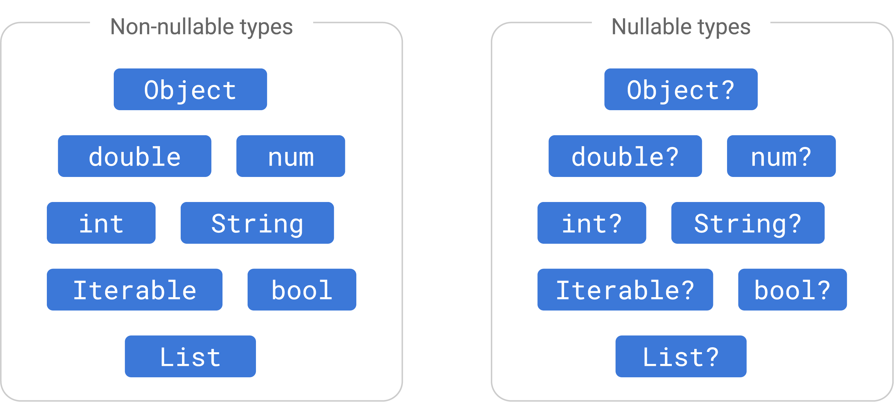

Overview
- 이 글은 Understanding null safety 문서의 내용을 바탕으로 Dart에서 null safety가 나온 배경 및 null safety의 동작 방식을 쉽게 이해하기 위해 작성하였다.
- 기본 문법적인 설명들을 제외하고 null safety의 원리를 이해하는데 필요하다고 생각되는 부분들만 정리했기 때문에 원문의 일부 내용이 누락되어 있고 설명하는 순서도 다르다.
- 빠르게 Dart null safety의 동작 방식에 대해 이해하는 것이 목적이라면 이 글을 이해하는 것으로 충분하겠지만, 더 자세한 설명이 필요하다면 원문을 정독하는 것을 권한다.
Null safety가 나온 이유
- Dart에서
null은Nulltype으로 표현된다. - Null safety 도입 전에는 Dart type system에서
Null이 다른 모든 type들의 subtype 이었다. - 그래서 type에 상관 없이 변수에
null을 할당할 수 있었다.String value = "hello"; value = null; - 이렇게 동작할 때 문제는 어떤 변수에 할당된 값이
null인지 아닌지 명확하게 알 수 없다는 것이다. - 만약 변수에
null이 할당된 것을 모르고 해당 변수의 값을 참조하면 runtime에 null reference exception이 발생하며 app이 crash 될 것이다.String value = null; value.length; // ❌ : null reference error - Null safety는 nullable한 변수를 null-safe하게 참조할 수 있는 방법을 제공한다.
Nullable type과 non-nullable type
- Null safety는 Dart type system의 구조를 변경하여
Nulltype이 다른 type들의 subtype이 아닌 독립적인 type으로 존재하도록 하여 문제를 해결한다. - 여기서
Null에 독립적으로 type graph를 이루는 type들을 non-nullable type으로 분류한다. Non-nullable type들은Nulltype과 연관이 없으므로 절대로null값을 가질 수 없다. null값을 가질 수 있는 type들은 nullable type으로 분류한다. Nullable type은 underlying type과Nulltype의 supertype으로, underlying type 뒤에?mark를 붙여서 표현한다. 이것은 nullable type이 non-null또는null값 모두 가질 수 있음을 의미한다.- 즉, null safety 도입 이후 Dart의 type은 아래와 같이 nullable type과 non-nullable type 두 그룹으로 분류된다.

Type promotion과 null safety
Type promotion
- Type promotion이란,
if등 control flow에서is연산자로 어떤 변수의 type을 특정할 수 있으면 control flow body 안에서 해당 변수의 type을is로 검사한 type으로 취급(promote)하는 것을 말한다.bool isEmptyList(Object object) { if (object is List) { return object.isEmpty; // ✅ : `object`가 `List` type인 것을 안다. } else { return false; } } - Null safety가 도입되기 전의 type promotion은 제한적이어서, 아래와 같이
is!연산자를 사용한 반대 상황에서는 동작하지 않았다.// Without null safety: bool isEmptyList(Object object) { if (object is! List) return false; return object.isEmpty; // ❌ }- Null safety를 도입하기 전에는
object가Listtype이라는 것을 Dart가 알지 못했기 때문에 위 코드는 실행되지 못했다. - Null safety에 type promotion을 도입하기 전에, 이러한 type promotion의 한계를 먼저 해결했다.
- 따라서, 위 코드가 동작하려면 null safety를 사용해야 한다.
- Null safety를 도입하기 전에는
- Null safety를 도입한 후에는 개선된 type promotion을 사용하여 위 코드가 정상적으로 실행될 수 있다.
// Using null safety: bool isEmptyList(Object object) { if (object is! List) return false; return object.isEmpty; // ✅ : `object`가 `List` type인 것을 안다. }- 기존 type promotion이 early return 및 unreachable code path에 대해서 잘 동작하지 않았던 문제가 개선됐다.
- 개선된 type promotion은
return,break,throw및 함수에서 early terminate로 동작하는 code를 인식한다.
Type promotion on null checks
-
Type promotion이
is연산자 외에== null및!= null구문을 통한 null check도 인식하도록 기능이 추가되었다.// Using null safety: String makeCommand(String executable, [List<String>? arguments]) { var result = executable; if (arguments != null) { result += ' ' + arguments.join(' '); // ✅ : `arguments`가 `null`이 아닌 것을 안다. } return result; } // or // Using null safety: String makeCommand(String executable, [List<String>? arguments]) { var result = executable; if (arguments == null) return result; return result + ' ' + arguments.join(' '); // ✅ : `arguments`가 `null`이 아닌 것을 안다. } -
Type promotion은 아래 두 가지 경우에만 사용할 수 있다.
- Local variable
- Private
finalfield (Dart 3.2)
-
위 두 가지 조건은
ifcondition 안에서null이 아니었는데 control flow body 에서 다시null이 되는 상황을 만들지 않는 조건이다. -
간혹
if문 안에서 null check를 했는데도 promotion이 안될 때가 있는데, 이 두 가지 조건을 만족하지 않는 변수 또는 field를 사용했을 것이다. 아래 코드는_temperature가finalfield가 아니기 때문에 promotion이 동작하지 않아 error가 발생한다.// Using null safety, incorrectly: class Coffee { String? _temperature; void checkTemp() { if (_temperature != null) { print('Ready to serve ' + _temperature + '!'); // ❌ : _temperature isn't final } } } -
변수 또는 field를 위 조건을 만족하도록 수정하기 어렵다면, local variable로 한 번 복사하는 pattern을 사용할 수 있다. 실제로 null check를 하는 대상이 local variable이 되어 promotion이 동작할 수 있다.
// Using null safety, incorrectly: class Coffee { String? _temperature; void checkTemp() { var temperature = _temperature; if (_temperature != null) { print('Ready to serve ' + _temperature + '!'); // ✅ } } } -
Type promotion이 실패했을 때 수정하는 더 자세한 방법은 Fixing type promotion failures 문서를 참고해 보면 좋다.
Working with nullable types
- Nullable type이
null이 아닌 값을 가지고 있을 때, 이 non-null 값을 안전하게 사용하는 방법들을 정리한다.
Null-aware operator와 Short-Circuit(단락)
- Null safety 도입 이전에는 null aware operator(
?.)를 사용해서 nullable 변수에 저장된 non-null value를 안전하게 사용할 수 있었다. - 이 연산자의 왼쪽 receiver가
null을 반환하면 오른쪽 구문의 실행을 건너뛰고 전체 구문을null로 평가하여 exception 없이null을 반환한다.// With or without null safety: String notAString = null; print(notAString?.length); // null - 그런데, 아래와 같이
?.연산자를 연달아 사용하는 경우 문제가 생긴다. 두 번째로 사용된?.연산자가 어떤 구문을 위해 사용된 것인지 모호해진다.// Using null safety: void showGizmo(Thing? thing) { print(thing?.doohickey?.gizmo); }doohickey가 nullable field라면?.연산자는doohickey를 위해 사용된 것일 수 있다.doohickey가 non-nullable field라면?.연산자는thing?.doohickey를 위해 사용된 것일 수 있다.
- 이 문제를 해결하기 위해 receiver가
null로 평가되는 경우 구문의 나머지 chain에 대한 실행을 생략하는 short-circut 방식을 사용한다. - 이 방법을 사용함으로써 위 코드에서 두 번째
?.는doohickey가 nullable type이기 때문에 사용된 것임을 알 수 있다.
Non-null assertion operator
- Nullable type이지만
null이 될 수 없음을 보장할 수 있는 변수는 assertion을 통해 non-null value를 사용할 수 있다. ascast operator를 사용해서 nullable type이 갖고 있는 non-null value를 가져올 수 있다.String? value = "hello"; (value as String).toUpperCase(); // HELLO- Nullable type은 underlying type과
Nulltype의 supertype 이다. - 따라서, nullable type을 underlying type으로 downcasting 할 수 있다.
- Nullable type은 underlying type과
!연산자는 왼쪽 구문을 underlying type으로 cast해 주는 축약 문법이다. 즉,ascast와 동일하게 동작한다.String? value = "hello"; value!.toUpperCase(); // HELLO- Nullable type 변수에
null이 할당되어 있을 때,ascast는 exception을 발생시키지 않고null을 반환하지만!연산자는 exception을 발생시키므로 사용에 주의한다.
Conclusion
- Dart가 type system을 기반으로 null safety를 지원하는 방식을 깊이 이해할 수 있었다.
- 이 문서를 통해 flow analysis나 type promotion 등의 개념을 추가로 배울 수 있었다. 각각의 개념들이 null safety를 구현하는데 자주 언급되었기 떄문에 다시 개별적으로 더 공부해야 할 것 같다.
- 최근 진행한 면접에서 Dart의 type promotion이 가끔 동작하지 않는 이유에 대해 대답하지 못했는데 이 문서를 통해 답을 찾을 수 있었다. Local variable과 private final field에 대해서만 type promotion이 동작한다는 것을 알게 되었으므로, 이제 type promotion이 동작하지 않는 문제를 해결할 수 있다.